Параллелограмм
Параллелограммом называется
четырехугольник,
у которого противолежащие
стороны попарно
параллельны.
Высотой
параллелограмма называется
отрезок
перпендикуляра
от любой точки какой-либо
стороны
параллелограмма до
противолежащей
стороны
(основания
параллелограмма) или ее продолжения.
Признаки параллелограмма
-
Если в четырехугольнике
две противолежащие
стороны
стороны равны и
стороны параллельны,
то этот четырехугольник -
параллелограмм.
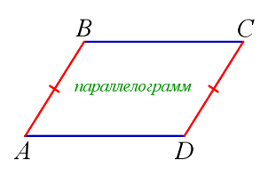
-
Если в четырехугольнике
противолежащие
стороны попарно равны,
то этот четырехугольник - параллелограмм.
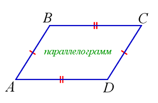
-
Если в четырехугольнике
противолежащие
углы равны, то этот
четырехугольник - параллелограмм.
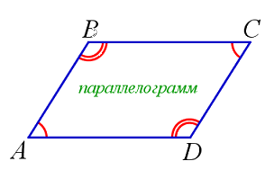
-
Если в четырехугольнике диагонали, пересекаясь, делятся
пополам, то этот четырехугольник - параллелограмм.
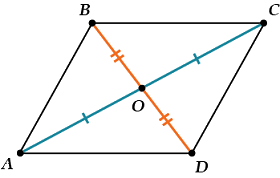
Свойства параллелограмма
-
Противолежащие стороны параллелограмма равны.

-
Периметр
параллелограмма P = 2(a+b).
-
Противолежащие углы параллелограмма равны.
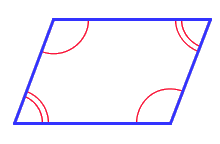
-
Сумма
двух углов параллелограмма,
прилежащих
к одной его стороне,
равна 180°: α + β = 180°.

-
Диагональ
параллелограмма делит его на два равных
треугольника.

-
Сумма квадратов диагоналей параллелограмма равна сумме квадратов
его сторон:d12 + d22 = 2(a2 + b2).
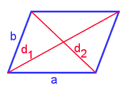
-
Диагонали
параллелограмма
пересекаются и
точкой
пересечения деляться пополам.
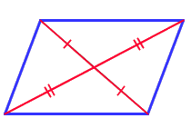
-
Точка
пересечения
диагоналей
параллелограмма является его
центром симметрии.
-
Две
диагонали параллелограмма делят его на четыре равновеликих треугольника.

-
Биссектриса
угла параллелограмма отсекает от него равнобедренный треугольник.
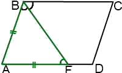
-
Биссектрисы
углов параллелограмма, прилегающих к одной его стороне,
взаимно перпендикулярны.

-
Биссектрисы
противолежащих углов параллелограмма, параллельны или лежат на одной прямой.

-
Высоты
параллелограмма обратно пропорциональны его соответственным сторонам:
a:b = hb : ha.
-
Высоты
параллелограмма, опущенные из одной его
вершины,
образуют угол,
равный углу
параллелограмма при
смежной вершине:
∠ (ha, hd) = a.
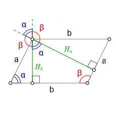
-
Середина
M любого отрезка KL с концами на противолежащих сторонах
параллелограмма лежит на прямой EF, проходящей черезе середины
двух других сторон.

-
Площадь
параллелограмма равна
произведению его
основания на
высоту: S = a • ha = d • hd.
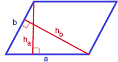
-
Площадь
параллелограмма
равна произведению
его смежных сторон
на синус
угла между ними: S = ab • sinα.
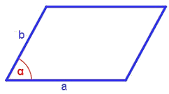
-
Площадь параллелограмма равна половине произведения его диагоналей
на синус угла между ними: S = 1/2 d1d2 • sinφ.
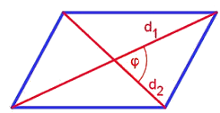